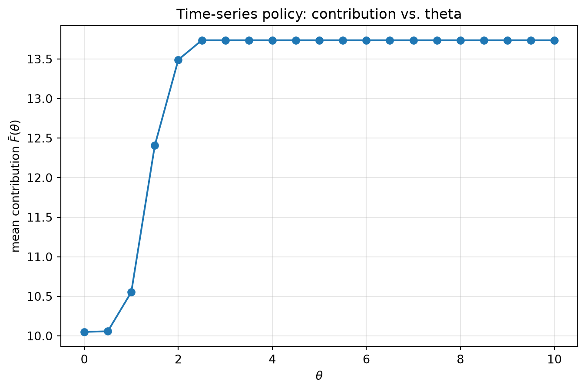
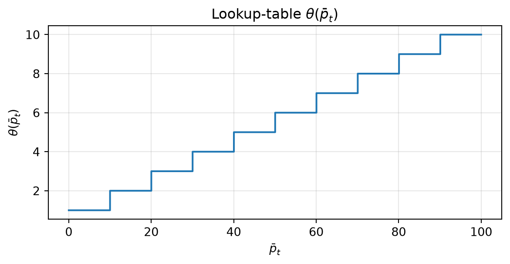

Frame the asset selling problem as an optimal stopping problem.
Model it with the five elements of the UMF.
Design and tune three PFA policies: sell-low, high-low, track.
Evaluate policies by simulation: mean, variance, confidence intervals.
Walk through the Python code (AssetSelling module).
1. Narrative
How long should we hold a block of shares of stock before selling?
We are a small player, so it does not matter how many shares we sell. We can sell all at once.
The price varies over time \(t\) according to some random process.
Once we sell the stock, the process stops.
2. Core elements of the problem
Metrics
Maximizing the expected price that we receive when we sell the asset.
Decisions
Whether to hold or sell the asset.
Sources of uncertainty
The selling price in future time periods.
3. UMF: State Variables
\[
S_t = (R_t^{asset}, p_t)
\]
Where:
\[
R_t^{asset} = \begin{cases}
1 & \text{if we are holding the stock at time } t, \\
0 & \text{if we are no longer holding the stock at time } t.
\end{cases}
\]
3. UMF: Decision \(x_t\)
\[
x_t = X^\pi(S_t)
\]
\[
x_t = \begin{cases}
1 & \text{if we sell the stock at time } t, \\
0 & \text{if we do not sell the stock at time } t.
\end{cases}
\]
Constraint: \(x_t \leq R_t^{asset}\)
3. UMF: Exogenous Information
Exogenous information is the change in price:
\[
W_{t+1} = \hat{p}_{t+1}
\]
3. UMF: Transition function
\[
S_{t+1} = S^M(S_t, x_t, W_{t+1})
\]
\[
R_{t+1}^{asset} = R_{t}^{asset} - x_t
\] Constraint: \(x_t \leq R_t^{asset}\) (we cannot sell what we no longer own)
\(z_\alpha\) is the value of \(z\) such that a normally distributed random variable \(Z\) exceeds \(z\) with a probability of \(\alpha\).
If we use \(\alpha = 0.05\) then \(z_{.05} = 1.645\), which corresponds to \(\text{Prob}[Z \ge 1.645] = .05\).
Pending work
Best policy search: run the different combinations of policy classes \(f \in \mathcal{F}\) and parameters \(\theta^f \in \Theta^f\) with the Python module AssetSelling, and pick the combination with the highest \(\overline{F}^{\pi}\).
Time series extension (§2.8.1): replace the price process with
Why do we write the exogenous information as \(W_{t+1}\) rather than \(W_t\)?
Because it is information that arrives after the decision \(x_t\) is made, between time \(t\) and \(t+1\). Writing \(W_t\) would imply that it is already known at time \(t\), when the decision is taken.
2.1 (Cont.)
At what point in time would we be computing \(S_{t+1}\) using equation (2.24)?
After taking the decision \(x_t\) at time \(t\) and observing the exogenous information \(W_{t+1}\), that is, at time \(t+1\).
2.2
What is the difference between \(p_t\) and \(p_t(\omega)\)?
\(p_t\) is the price at time \(t\) seen as a random variable (before we know its value). \(p_t(\omega)\) is the specific realization of that price along one particular sample path \(\omega\) (for example, one row of the simulated price table).
2.3
As you test out different policies, does the structure of the transition function change?
No. The transition function describes how the system evolves and does not depend on the policy. Some policies require carrying extra state variables (e.g. \(\bar p_t\) for the track policy), which adds an equation to the transition function, but its basic structure stays the same.
2.4
The objective function in equation (2.4) is written for a deterministic version of the problem. If we solve this optimization problem, does the decision \(x_t\) at time \(t\) depend on the prices \(p_{t'}\) for \(t'\) > \(t\)?
Yes. In the deterministic model all future prices are assumed known, so \(x_t\) depends on \(p_{t'}\) for \(t' > t\). That is not implementable in practice, since at time \(t\) we cannot know future prices. This is the reason for using policies \(X^\pi(S_t)\) that only use information available at time \(t\).
2.5
Using the prices in table 2.2, use the policy that you will sell when the price falls below \(\$44.00\). Compute the objective function \(\hat{F}(\omega^n)\) for \(n = 1, \dots , 10\). Compute the average selling price and its variance.
We do not know the value of \(\eta = (\eta_0, \eta_1)\), but our belief about the true value of \(\eta\) is that it is multivariate normal, with \(\eta \sim MVN(\bar{\eta}, \Sigma)\) where
where \(\Sigma_{tij} = Cov(\eta_i, \eta_j)\) for \(i, j \in (0, 1)\).
2.6 A (Cont.)
Assume that at time \(t\), \(p_t = 20\), \(p_{t-1} = 24\) and we observe \(p_{t+1} = 18.2\).
Using the equations in section 2.8.2, what is the updated estimates of \(\bar{\eta}_{t+1}\) and \(\Sigma_{t+1}\)? Give the updating equation and compute \(\bar{\eta}_{t+1}\) and \(\Sigma_{t+1}\) numerically.
What is the state variable for this problem? Give the list of variables. Note that you may have to add variables as you progress through the exercise (you do not have all the information at this point). Make sure you include all the information you need to update \(\bar\eta_{t+1}\) from \(\bar\eta_t\). How many dimensions does your state variable have (this is the same as asking how many variables are in \(S_t\)).
\(R_t\): whether we still hold the asset (1 variable).
\(p_t, \dots, p_{t-6}\): the 7 prices needed for the 7-day moving average (and for \(\phi_t\)) (7 variables).
\(\bar\eta_t\): current estimate of the price model coefficients (2 variables).
\(M_t=\Sigma_t\): covariance matrix of the beliefs, needed to update \(\bar\eta\) (4 entries, or 3 using symmetry).
\(\bar p_t\) is not needed: it is a function of \(p_t,\dots,p_{t-6}\). \(\theta^{sell}\) is a fixed parameter, so it belongs to \(S_0\), not to \(S_t\).
Dimension:\(1 + 7 + 2 + 4 = 14\) variables (13 using the symmetry of \(M\)).
2.6 C
Our trader makes trading decisions based on a 7-day moving average of prices. Assume we are on day \(t\), and the 7-day moving average is computed using
The trader will sell an asset if \(p_t < \bar{p}_t - \theta^{sell}\). Write out the decision rule as a policy \(X^{\pi}(S_t | \theta^{sell})\) that returns 1 if we sell the asset and 0 otherwise.
The newly observed price. The prediction error \(\hat\varepsilon_{t+1}\) is not exogenous, because it is computed from \(\bar\eta_t\), which is part of the state.
\[
W_{t+1} = p_{t+1}
\]
(equivalently, the noise \(\varepsilon_{t+1}\sim N(0,6^2)\) that generates the price). The prediction error is a derived quantity:
Write out the objective function (and remember to use an expectation operator for each random variable as described in the instructions). Be sure to specify what you are optimizing over given the class of policy specified in part (c). Assume that you are training your policy on historical data in an offline setting.
We optimize only over \(\theta^{sell}\), since the policy class is fixed (moving-average rule), so \(\pi = (f, \theta^{sell})\). The 7-day moving average needs 7 prices, so the first day on which the policy can decide is \(t_0 = 7\) (the initial state \(S_{t_0}\) already contains \(p_7,\dots,p_1\)):
subject to \(x_t = X^{\pi}(S_t|\theta^{sell}) \le R_t\) and the transition equations of part (e), with \(W_{t+1} = p_{t+1}\).
2.6 F (Cont.)
Offline training on historical data. The table gives a single historical path \(\omega^1\) (one price per day, \(T=10\)), not several sample paths. The expectations are replaced by the observed history (\(N=1\)):
Since the policy sells only once, \(\bar F(\theta^{sell}) = p_{\tau}\), where \(\tau\) is the first \(t \ge 7\) with \(p_t < \bar p_t - \theta^{sell}\) (or \(\tau = T = 10\) if that never happens).
Decisions can only be evaluated on \(t = 7, 8, 9, 10\) (4 days), because \(\bar p_t\) in (2.26) includes \(p_t\) and needs 7 prices.
The optimum is not unique, and it comes from a single path of 4 decision days, so it is very likely overfitted. With more historical paths (or simulated ones) we would average \(\hat F^{\pi}(\omega^n)\) over \(n=1,\dots,N\).
2.7 A
The questions below walk you through the steps of modeling the selling of an asset (say, a single share of a stock).
Use the data in the table to produce a cumulative distribution function. You will need to plot the cdf, which looks like a step function with five steps.
2.7 A (Cont.)
# 1) Defining bins to applymin_price = prices.p_t.min()bin_step = (prices.p_t.max() - min_price) /5bins_to_apply = [min_price-1] + [min_price + (1+x) * bin_step for x inrange(5)]# 2) Contar observaciones por bincounts = pd.cut(prices.p_t, bins=bins_to_apply).value_counts(sort=False)# 3) Probabilidad (PMF) y CDFtable = pd.DataFrame({"count": counts,"pmf": counts / counts.sum(),})table["cdf"] = table["pmf"].cumsum()print(table)
You now observe three realizations of prices: 25, 18, 160. Use the cumulative distribution function from (a) to create three realizations of a random variable that is uniformly distributed between 0 and 1 (call this random variable U).
2.7 B (Cont.)
import numpy as npobserved_prices = np.array([25, 18, 160])# table.index.categories.right are the right endpoints of the binsright_edges = table.index.categories.right.to_numpy()cdf_vals = table["cdf"].to_numpy()# Intervals from pd.cut are (left, right], so use side="left"idx = np.searchsorted(right_edges, observed_prices, side="left")U = cdf_vals[idx]result = pd.DataFrame({"price": observed_prices,"U = F(price)": U})print(result)
price U = F(price)
0 25 0.7
1 18 0.7
2 160 1.0
2.7 C
Now use these observations of U to create three observations of a random variable Z that is normally distributed with mean 0, variance 1. Be sure that your method for generating these random variables is clear. [Hint: use the cumulative distribution for a normal (0,1) random variable just as you used the cdf you created in part (a) to create uniform random variables in part (b).]
2.7 C (Cont.)
from statistics import NormalDistrng = np.random.default_rng(seed=42)# Guard against U = 0 or U = 1, where the normal quantile is infiniteeps =1e-12U_clipped = np.clip(U, eps, 1- eps)# Standard normal N(0, 1) via inverse CDF: Z = Phi^{-1}(U)nd = NormalDist(mu=0, sigma=1)Z = np.array([nd.inv_cdf(float(u)) for u in U_clipped])result = pd.DataFrame({"price": observed_prices,"U = F(price)": U,"Z = Phi^{-1}(U)": Z,})print(result)
price U = F(price) Z = Phi^{-1}(U)
0 25 0.7 0.524401
1 18 0.7 0.524401
2 160 1.0 7.034487
2.7 D
Assume that you used this method for creating a sequence of normal (0,1) random variables to fit a linear model of the form
where \(\varepsilon_{t+1}\) is normally distributed with mean 0 and variance 1 (we know this because we are simulating normal (0,1) random variables). Starting with \(t = 1\) and \(Z_0 = 0.5\) and \(Z_1 = −0.3\), generate Z2, Z3, Z4 assuming that \(\varepsilon_{2} = −.6\), \(\varepsilon_{3} = 2.2\), \(\varepsilon_{4} = 1.4\). Then, use your cumulative distribution from part (a) to generate observations of P2, P3 and P4.
2.7 D (Cont.)
import numpy as npimport pandas as pdfrom statistics import NormalDist# Standard normal distribution N(0,1)nd = NormalDist(mu=0, sigma=1)# ---- Generate Z_t from the AR(2) model ----Z = {0: 0.5, 1: -0.3}eps = {2: -0.6, 3: 2.2, 4: 1.4}for t inrange(2, 5): Z[t] =0.7* Z[t-1] +0.3* Z[t-2] + eps[t]Z2, Z3, Z4 = Z[2], Z[3], Z[4]# ---- Convert Z_t to Uniform(0,1) via U_t = Phi(Z_t) ----U2 = nd.cdf(Z2)U3 = nd.cdf(Z3)U4 = nd.cdf(Z4)def inverse_empirical_cdf(df, u):"""Return the first price-bin right edge where F(p) >= u."""# ---- Invert the empirical CDF from part (a) ----# right_edges are the right endpoints of the five price bins right_edges = df.index.categories.right.to_numpy() cdf_vals = df["cdf"].to_numpy() idx = np.searchsorted(cdf_vals, u, side="left") idx =min(idx, len(right_edges) -1) # guard if u == 1return right_edges[idx]P2 = inverse_empirical_cdf(table, U2)P3 = inverse_empirical_cdf(table, U3)P4 = inverse_empirical_cdf(table, U4)result = pd.DataFrame({"t": [2, 3, 4],"Z_t": [Z2, Z3, Z4],"U_t = Phi(Z_t)": [U2, U3, U4],"P_t = F^{-1}(U_t)": [P2, P3, P4]})print(result)
In addition to the module AssetSelling, you will also need to download the spreadsheet “Chapter2 asset selling policy” from https://tinyurl.com/sdamodelingsupplements which provides parameters to be used by the python module.
Simulate the policy for 200 time periods using the parameters:
import osimport sysdoc_dir = os.environ.get("QUARTO_DOCUMENT_PATH", os.getcwd())sys.path.insert(0, doc_dir)sys.path.insert(0, os.path.join(doc_dir, "AssetSelling"))import pandas as pdimport AssetSellingModel as asmimport AssetSellingPolicies as aspmodel = asm.AssetSellingModel(S0={"price": 10}, T=20, seed=42)policy = asp.HighLowPolicy(model=model, theta_low=6, theta_high=13)mean_price = policy.run_policy(n_iterations=200)prices = policy.performance["C_t sum"] # selling price of each pathsd =float(prices.std()) # sample std devvar_avg =float(prices.var()) /len(prices) # variance of the averagez =1.645# 90% CI: Prob[Z >= 1.645] = .05print(f"Mean selling price : {mean_price:.4f}")print(f"Std dev of prices : {sd:.4f}")print(f"Variance of average : {var_avg:.4f}")print(f"90% CI : [{mean_price - z * var_avg**0.5:.4f}, "f"{mean_price + z * var_avg**0.5:.4f}]")
Mean selling price : 9.7314
Std dev of prices : 4.9655
Variance of average : 0.1233
90% CI : [9.1538, 10.3090]
2.8 A (Cont.)
Mean selling price \(\approx 9.73\), a little below the initial price of \(10\), so this particular high-low setting performs slightly worse than selling immediately.
2.8 B
Perform a search for the best value of \(\theta^{min}\) and \(\theta^{max}\) by fixing \(\theta^{max} = 13\), and then searching in increments of 1 for the best \(\theta^{min}\). Then fix at that value of \(\theta^{min}\) and perform a similar search for \(\theta^{max}\) (enforce the constraint that \(\theta^{max} = \theta^{min} + 2\)).
2.8 B (Cont.)
def evaluate(theta_low, theta_high, n=200, seed=42): m = asm.AssetSellingModel(S0={"price": 10}, T=20, seed=seed) p = asp.HighLowPolicy(model=m, theta_low=theta_low, theta_high=theta_high)return p.run_policy(n_iterations=n)# Step 1: fix theta_max = 13, sweep theta_min in increments of 1.# The constraint theta_max >= theta_min + 2 limits theta_min to 11.step1 = pd.DataFrame( [{"theta_min": tl, "theta_max": 13, "mean": evaluate(tl, 13)}for tl inrange(0, 12)])best_tl =int(step1.loc[step1["mean"].idxmax(), "theta_min"])print(f"Best theta_min (theta_max = 13): {best_tl}, mean {step1['mean'].max():.4f}")
Best combination: theta_min = 0, theta_max = 19, mean 11.2862
2.8 B (Cont.)
The two-step search lands on \(\theta^{min} = 0\), \(\theta^{max} = 19\) with a mean \(\approx 11.29\). Note that \(\theta^{min} = 0\) is a corner case (the sell-low rule never triggers), and the 200-path estimates are noisy, so a full grid over both parameters would be more robust. Here the constraint is read as \(\theta^{max} \ge \theta^{min} + 2\) (a minimum gap of 2); reading it literally as \(\theta^{max} = \theta^{min} + 2\) would collapse the second step to a single value.
2.9
Consider a policy that understands that the price of the asset might be rising. Forecast the price for time \(t+1\) with the fitted time-series model
used as a forecast of \(p_{t+1}\) given what we know at time \(t\).
2.9 A
What is the state variable for this problem? If prices are discretized to the nearest 0.1 and range between 0 and 100, what is the size of the state space?
To evaluate the forecast we need the current price and the two previous prices, plus the physical state of whether we still hold the asset:
\[
S_t = (R_t,\ p_t,\ p_{t-1},\ p_{t-2}).
\]
2.9 A (Cont.)
Each price is discretized to the nearest 0.1 over \([0, 100]\), giving \(1001\) values (\(0.0, 0.1, \dots, 100.0\)), and \(R_t \in \{0, 1\}\). Hence
Policy: sell if \(p_t < \bar p_t - \theta\) or \(p_t > \bar p_t + \theta\) (i.e. a sudden deviation from the forecast), else sell at \(t = T\). We replicate the AssetSelling price process (bias Markov chain + Normal noise, initial price 10), which means enlarging the state to \((R_t, p_t, p_{t-1}, p_{t-2})\), then sweep \(\theta\):
2.9 B (Cont.)
import timeimport numpy as npimport matplotlib.pyplot as plt# Same price process as AssetSellingModel: bias (Up/Neutral/Down) Markov chain# plus Normal(scale=2) increments, price floored at 0, initial price 10.trans = {"Up": [0.9, 0.1, 0.0], "Neutral": [0.2, 0.6, 0.2], "Down": [0.0, 0.1, 0.9]}bstep = {"Up": 1.0, "Neutral": 0.0, "Down": -1.0}def generate_paths(N, T, p0=10.0, seed=42): rng = np.random.RandomState(seed) paths = np.empty((N, T +1)) paths[:, 0] = p0for n inrange(N): bias ="Neutral"for t inrange(T): u = rng.uniform()if u < trans[bias][0]: bias ="Up"elif u < trans[bias][0] + trans[bias][1]: bias ="Neutral"else: bias ="Down" paths[n, t +1] =max(0.0, paths[n, t] + rng.normal(bstep[bias], 2.0))return paths
2.9 B (Cont.)
def payoff(theta, path, T):# Pad with two copies of p0 for the missing lags p_{-1}, p_{-2}. ext = np.concatenate([[path[0], path[0]], path])for t inrange(T): pt = ext[t +2] pbar =0.7* ext[t +2] +0.2* ext[t +1] +0.1* ext[t]if pt < pbar - theta or pt > pbar + theta or t == T -1:return ptN, T =200, 20paths = generate_paths(N, T)thetas = np.arange(0.0, 10.5, 0.5)start = time.time()means = [np.mean([payoff(th, p, T) for p in paths]) for th in thetas]elapsed = time.time() - startprint(f"Best theta: {thetas[int(np.argmax(means))]}, mean contribution {max(means):.4f}")print(f"Elapsed (21 thetas x {N} paths): {elapsed:.3f}s")
Best theta: 2.5, mean contribution 13.7363
Elapsed (21 thetas x 200 paths): 0.035s
2.9 B (Cont.)

2.9 B (Cont.)
The contribution is \(\approx 10\) (the initial price) at \(\theta = 0\), because the policy sells almost immediately on any deviation from the forecast. It then rises with \(\theta\) and flattens out around \(\theta \approx 2.5\) at \(\approx 13.74\): beyond that point the bands are so wide that the rule never triggers, so the asset is simply held to the horizon \(T\). In this sample the “sell on deviation” rule never beats holding (the best \(\theta\) is the largest one), a reminder that a policy class can be dominated even though tuning it is cheap. Even with the large state space of 2.9a, the parameter search is still just a one-dimensional sweep (200 paths, seed 42, \(\approx 0.1\)s).
2.10
(Continuing from 2.9) If the stock follows a seasonal pattern, replace \(\theta\) with \(\theta_t\). How would this complicate the policy search?
A scalar parameter becomes a \(T\)-dimensional vector \(\theta = (\theta_0, \dots,
\theta_{T-1})\). A grid search now has \(K^T\) combinations if each \(\theta_t\) takes \(K\) values, so it grows exponentially (\(K^{20}\) is already hopeless even for tiny \(K\)). Estimating \(T\) parameters also needs far more sample paths to be reliable, so the estimates become noisier and prone to overfitting. The fix is the same trade-off as always: either give \(\theta_t\) a low-dimensional parametric form (a polynomial or Fourier basis, a few seasonal coefficients), or use a coordinate/gradient search instead of a full grid.
2.11
(Continuing from 2.9) Now let the buy-sell signal depend on price, \(\theta(\bar p_t)\), with a larger deviation required when prices are higher.
2.11 A
Describe a lookup-table representation of \(\theta(\bar p_t)\); discretize \(\bar p_t\) into 10 ranges. How does this complicate the search?
Split \(\bar p_t\) into 10 bins and store one value per bin, so \(\theta = (\theta_1, \dots, \theta_{10})\) becomes a 10-element vector (a step function of \(\bar p_t\)):
2.11 A (Cont.)

2.11 A (Cont.)
The number of tunable parameters jumps from 1 to 10, so a grid search becomes a \(K^{10}\) search over the table, plus we now have to choose the bin boundaries (a modeling decision on top of the tuning).
2.11 B
Suggest a parametric form for \(\theta(\bar p_t)\) capturing “larger \(\theta\) for larger \(\bar p_t\)”. What parameters do you now search over?
A simple choice is a linear threshold in the price level:
or a proportional form \(\theta(\bar p_t) = \theta_0 \bar p_t\). This collapses the 10-table entries into just two parameters, \((\theta_0, \theta_1)\), keeping the search low-dimensional (a small 2-D grid or a coordinate search) while still capturing the intuition that deviations must be larger at higher price levels.